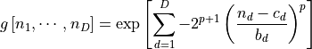

nmrespy.freqfilter¶
Frequecy filtration of NMR data using super-Gaussian band-pass filters
- class nmrespy.freqfilter.FrequencyFilter(data, region, noise_region, sw, offset, sfo, region_unit='idx', cut=True, cut_ratio=3.0)[source]¶
Fequency filter class.
- Parameters
data (numpy.ndarray) – The time-domain signal.
region ([[int, int]], [[float, float]], [[int, int], [int, int]] or) –
[[float – Boundaries specifying the region to apply the filter to.
float] – Boundaries specifying the region to apply the filter to.
[float – Boundaries specifying the region to apply the filter to.
float]] – Boundaries specifying the region to apply the filter to.
noise_region ((Same type as region)) – Boundaries specifying a region which does not contain any noticable signals (i.e. just containing experiemntal noise).
region_unit ('idx', 'ppm' or 'hz', default: 'idx') – The units which the boundaries in region and noise_region are given in.
sw ([float], [float, float] or None, default: None) – The sweep width of the signal in each dimension. Required as float list if region_unit is ‘ppm’ or ‘hz’.
offset ([float], [float, float] or None, default: None) – The transmitter offset in each dimension. Required as float list if region_unit is ‘ppm’ or ‘hz’.
sfo ([float], [float, float] or None, default: None) – The tansmitter frequency in each dimnesion (MHz). Required as float list if region_unit is ‘ppm’ or ‘hz’.
p0 ([float], [float, float], or None default: None) – Zero-order phase correction in each dimension in radians. If None, the phase will be set to 0.0 in each dimension.
p1 ([float] or [float, float], default: [0.0, 0.0]) – First-order phase correction in each dimension in radians. If None, the phase will be set to 0.0 in each dimension.
cut (bool, default: True) – If True, the filtered frequency-domain data will be trancated prior to inverse Fourier Transformation, reducing the number of signal points. If False, the data is not truncated after FT.
cut_ratio (float, default: 3.0) – If cut is set to True, this gives the ratio of the cut signal’s bandwidth and the filter bandwidth. This should be greater than 1.0.
Notes
Todo
Write me!
- _get_region(name, unit)[source]¶
Return either region or noise_region, based on name
- Parameters
name ('region' or 'noise_region') – Name of attribute to obtain.
unit ('idx', 'hz', 'ppm') – Unit to express the region bounds in.
- Returns
region ([[int, int]], [[int, int], [int, int]], [[float, float]],)
or [[float, float], [float, float]]
- get_fid(cut=True)[source]¶
Returns frequency-filtered time domain data.
- Parameters
cut (bool, default: True) – If True, and cut was set to True when the class was initialised, the FID derived from the cut, filtered spectrum is returned. Otherwise, the FID of the uncut spectrum is returned.
- Returns
fid
- Return type
numpy.ndarray
- get_filtered_spectrum(cut=True)[source]¶
Returns frequency-filtered spectral data.
- Parameters
cut (bool, default: True) – If True, and cut was set to True when the class was initialised, the cut, filtered spectrum is returned. Otherwise, the uncut spectrum is returned.
- Returns
filtered_spectrum
- Return type
numpy.ndarray
- get_fs(cut=True)[source]¶
Shorthand for
get_filtered_spectrum().
- get_noise_region(unit='idx')[source]¶
Returns the spectral noise region selected
- Parameters
unit ('idx', 'hz', 'ppm', default: 'idx') – Unit to express the region bounds in.
- Returns
noise_region ([[int, int]], [[int, int], [int, int]],)
[[float, float]], or [[float, float], [float, float]]
- get_offset(unit='hz', cut=True)[source]¶
Returns the offset of the cut signal
- Parameters
unit ({'hz', 'ppm'}, default: 'hz') – Unit to express the sweep width in.
cut (If True, and cut was set to True when the class was) – initialised, the offset of the cut, filtered signal is returned. Otherwise, the offset of the uncut signal is returned.
- get_region(unit='idx')[source]¶
Returns the spectral region selected
- Parameters
unit ('idx', 'hz', 'ppm', default: 'idx') – Unit to express the region bounds in.
- Returns
region ([[int, int]], [[int, int], [int, int]], [[float, float]],)
or [[float, float], [float, float]]
- get_sg()[source]¶
Shorthand for
get_super_gaussian().
- get_super_gaussian()[source]¶
Returns the super-Gaussian filter used.
- Returns
super_gaussian
- Return type
numpy.ndarray
- get_sw(unit='hz', cut=True)[source]¶
Returns the sweep width of the cut signal
- Parameters
unit ({'hz', 'ppm'}, default: 'hz') – Unit to express the sweep width in.
cut (If True, and cut was set to True when the class was) – initialised, the sweep width of the cut, filtered signal is returned. Otherwise, the sweep width of the uncut signal is returned.
- nmrespy.freqfilter.super_gaussian(region, shape, p=40.0)[source]¶
Generates a super-Gaussian for filtration of frequency-domian data.

- Parameters
region ([[int, int]] or [[int, int], [int, int]]) – The region for the filter to span. For each dimension, a list of 2 entries should exist, with the first element specifying the low boundary of the region, and the second element specifying the high boundary of the region (in array indices). Note that for a given dimension
 ,
,shape ([int] or [int, int]) – The number of elements along each axis.
p (float, default: 40.0) – Power of the super-Gaussian. The greater the value, the more box-like the filter.
- Returns
sg (numpy.ndarray) – Super-Gaussian filter.
center ([int] or [int, int]) – Index of the center of the filter in each dimension.
bw ([int] or [int, int]) – Bandwidth of the filter in each dimension, in terms of the number of points spanned.